In dieser Einheit wird gezeigt, wie virtuelle Kameras in der Theorie und in der praktischen Umsetzung funktionieren und wie effizient 3D Szenen aus wohldefinierten Blickwinkeln dargestellt werden können.
Nach dieser Lehreinheit solltest Du…
…die Eigenschaften/Attribute einer virtuellen Kamera kennen,
…die einzelnen Schritte der Kameratransformation beschreiben können,
…typische Koordinatenräume kennen und zuordnen können und
…die Rolle homogener Koordinaten für perspektivische Verzerrung nachvollziehen können.
Vorwissen
Zum besseren Verständnis von virtuellen Kameras in der Echtzeitcomputergrafik, empfehlen wir die folgenden Inhalte vorab zu sichten und zumindest grundlegend durchzuarbeiten:
Optional aber empfehlenswert ist die sehr anschauliche und interaktive Einführung zu den physikalischen Grundlagen von Kameras und Linsen von Bartosz Ciechanowski: https://ciechanow.ski/cameras-and-lenses/.
Motivation und Problemstellung
Bei der Bildsynthese von 2D Szenen kann der anzuzeigenden Ausschnitt, den es zu Rendern gilt, beispielsweise über ein Rechteck spezifiziert werden. Dieses Rechteck, im Folgenden viewport (Sichtfenster) genannt, kann mittels Offset und Ausdehnung eindeutig definiert werden (siehe WebGLRenderingContext.viewport):
// viewport(x: GLint, y: GLint, width: GLint, height: GLint);
gl.viewport(0, 0, 3840, 2160); // offset and extent in px
In dieser Einheit wollen wir untersuchen, wie für 3D Szenen in ähnlicher Weise zu rendernde Ausschnitte spezifiziert werden können. Bei der Modellierung von 3D Szenen, werden typischerweise Geometrien (z. B. Gelände und Vegetation) und weitere Bestandteile wie Lichter und Audioquellen positioniert und räumlich zueinander angeordnet. Nun liegt es nahe, für die Spezifikation des Renderingausschnittes, eine vergleichbar greifbare und nahbare Modellierung oder auch Metapher zu wählen: die virtuelle Kamera.
Bevor wir uns jedoch genauer mit der Umsetzung dieser Metapher beschäftigen, überlegen wir zunächst, was eine virtuelle Kamera ausmacht. Welche Form der Parameterisierung ist geeignet, welche Effekte gilt es zu berücksichtigen und welche können oder müssen wir an dieser Stelle vorerst vernachlässigen. Dazu wollen wir uns ein paar Aufnahmen einer Szene aus dem Spiel Portal 2 ansehen.
🧠 Welche Eigenschaften einer Kamera würdest du aus den Bildern ableiten?
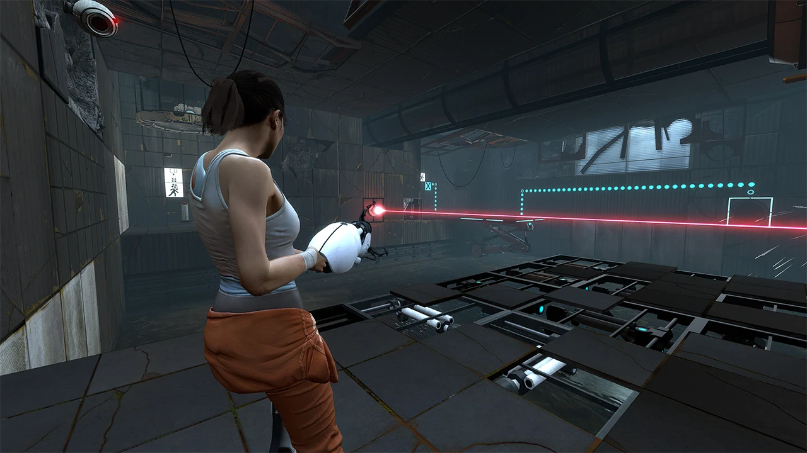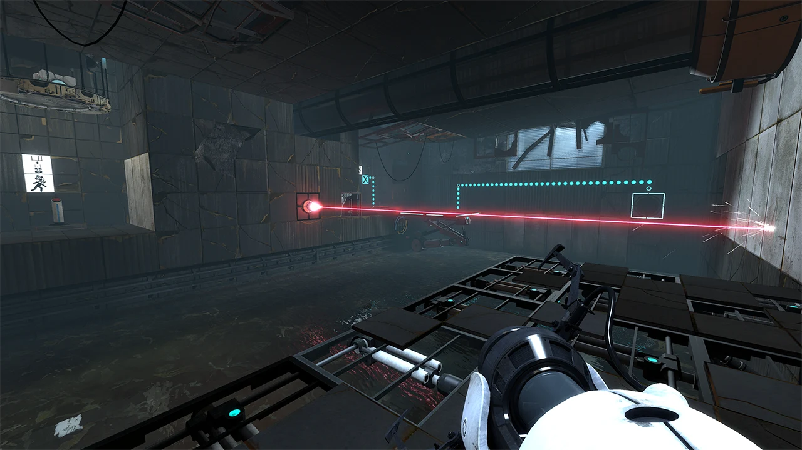 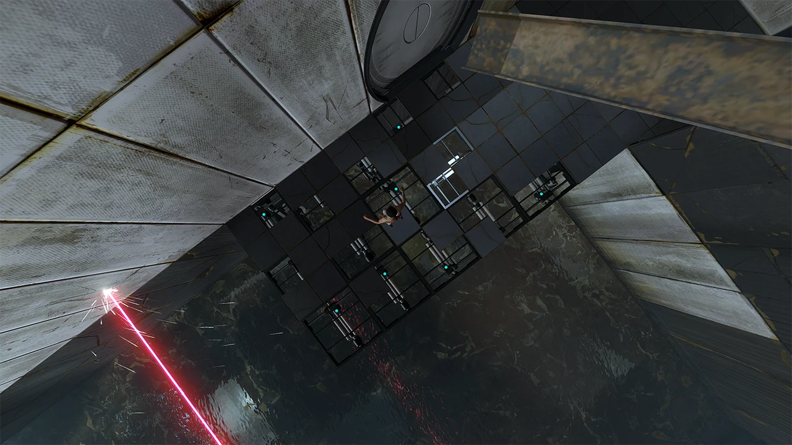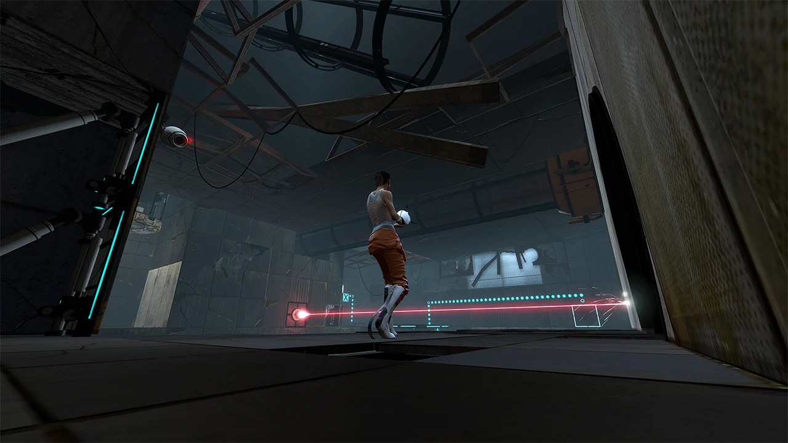
Bevor du weiterscrollst, überlege vorerst selbst, in welchen Eigenschaften sich die Kameras der gegebenen Ansichten unterscheiden. Du kannst dazu das folgende Notizfeld verwenden:
Modell einer virtuellen Kamera
Folgende Parameter haben einen maßgeblichen Einfluss auf die Aufnahme einer Kamera:
Kamerastandpunkt View Position
Der Standpunkt der Kamera bestimmt die genaue Position, von der aus die Szene abgebildet wird. Bei einer First-Person-Ansicht wäre das z. B. die Kopfmitte des gesteuerten Charakters, bei einer Vogelperspektive ein Punkt über dem Geschehen.
Kamerablickrichtung View Direction
Die Blickrichtung der Kamera legt fest, in welche Richtung die Kamera gedreht ist. Sie legt den Mittelpunkt der Aufnahme fest.
Sichtwinkel Field of View
Der Sichtwinkel beschreibt die Größe des Sichtfeldes in vertikaler und horizontaler Richtung. Er wird meist als vertikaler Öffnungswinkel angegeben. Der horizontale Öffnungswinkel wird nicht explizit spezifiziert, sondern mithilfe des Seitenverhältnisses ermittelt.
Seitenverhältnis Aspect Ratio
Das Seitenverhältnis beschreibt das Verhältnis von Breite zu Höhe des durch die Kamera erzeugten, rechteckigen Bildes.
Aufwärtsrichtung Up Direction
Die Aufwärtsrichtung beschreibt, in welcher Richtung aus Sicht der Kamera „oben” ist?
Die Kamerablickrichtung kann auch implizit durch ein Sichtzentrum festgelegt werden. Dabei wird eine Position beschrieben, zu der vom Kamerastandpunkt aus geschaut werden soll. Aus einem Kamerastandpunkt (eye) und einem Sichtzentrum (center) lässt sich die Kamerablickrichtung einfach ermitteln.
Neben diesen Eigenschaften, gibt es noch zwei weitere Parameter, die sich nicht ohne weiteres in den Abbildungen erkennen lassen:
Clippingebenen Clipping Planes
Die Clipping Planes, Near Plane und Far Plane, beschreiben ab bzw. bis zu welcher Tiefe (dem Abstand zur Kamera) Objekte gerendert werden. Das kann unter anderem dazu verwendet werden, Objekte außerhalb dieses Intervalls früh im Renderingprozess zu verwerfen und dadurch den nötigen Aufwand deutlich zu verringern.
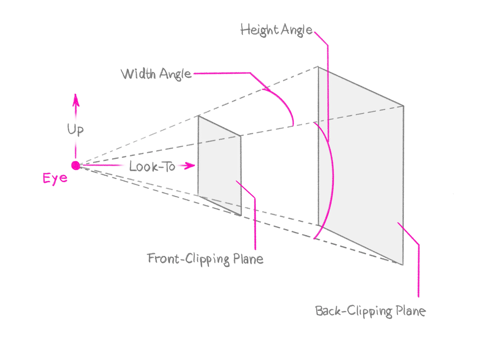
🧩 Illustration des Kameramodells
Unser Modell der virtuellen Kamera soll also eine 3D-Szene aus einer bestimmten Perspektive darstellen und die dafür nötigen geometrischen Transformationen beinhalten.
🧩 ToDo: Einschub Kameramodelle (first person etc.)
Bei „realen”, physischen Kameras gibt weitere Parameter die vorrangig durch die Wahl des Objektivs bestimmt werden und beispielsweise die Beleuchtung oder Schärfe einer Aufnahme bedingen. Derartige Parameter sind vorerst nicht Teil unserer virtuellen Kamera. Wir schließen dazu u. A. folgende Parameter vorerst aus:
Brennweite einer Linse (z. B. um Tiefenunschärfe zu erzeugen)
Krümmungen einer Linse, also Verzerrung die durch die Linsenform entstehen
Chromatische und Sphärische Aberrationen
Vignettierungen
Verschlusszeit und Lichtstärke (maximale Blendenöffnung)
Optische Auflösung (vergleichbar mit der Renderingauflösung)
...
Die Einflüsse dieser Parameter auf das Renderingergebnis können häufig durch geeignetes Post-Processing angenähert werden. Dies ist jedoch nicht Teil dieser Lehreinheit. Für weitere Informationen zu Linseneffekten und den physikalischen Grundlagen von Kameras empfehlen wir Cameras and Lenses, von Bartosz Ciechanowski.
Umsetzung und Mathematisches Modell
Ziel: Die virtuelle Kamera soll genutzt werden, um die Weltkoordinaten der Szenegeometrie derart zu transformieren, dass im Viewport alle von der Kamera sichtbaren Geometrien abgebildet und (im Falle einer Perspektivischen Projektion) perspektivisch verzerrt sind. Die Fragmentprozessierung während des Renderings soll dabei nur auf Fragmenten rasterisierter Szeneobjekten erfolgen, die auch tatsächlich im gerenderten Bild auftauchen – also Objekte verwerfen, die über oder hinter der Kamera liegen, oder zu weit weg sind.
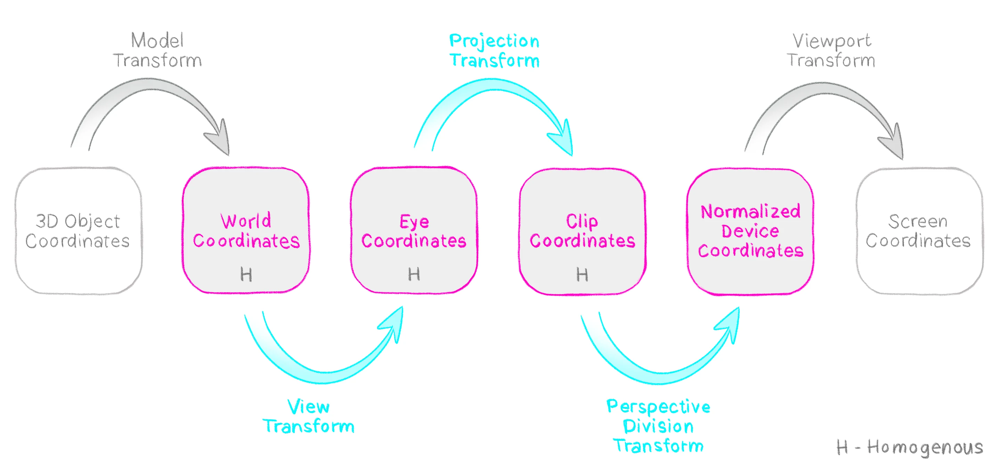
Koordinatenräume und entsprechende Transforms für ein Rendering mit virtueller Kamera.
Rasterisiert und anschließend mittels Fragment-Shader prozessiert werden nur Dreiecke, bei denen mindestens ein Vertex nach den vorherigen Renderingstufen (z. B. Vertexprozessierung mittels Vertex-Shader) im Intervall [−1,+1] liegt. Zur Erinnerung, die Positionierung der Vertices erfolgt im Normalfall über die Zuweisung einer homogenen Koordinate auf gl_Position im Vertex-Shader:
attributevec3 a_position; // attribute that receives data from a vertex buffervoid main() {
gl_Position = T * vec4(a_position, 1.0);
}
Die x und y Koordinaten beschreiben die zweidimensionale Position in einem sogenannten Clip Space, die z-Koordinate die Tiefe. Im Fragment-Shader liegen die Koordinaten danach als nicht-homogene, normalisierte Gerätekoordinaten vor (Normalized Device Coordinates, kurz NDC), die Fragmente sind über gl_FragCoord in Fensterkoordinaten (Screen Space) in Pixel verfügbar.
Wie lassen sich Weltkoordinaten mithilfe der virtuellen Kamera in Clip Space, NDC und Screen Space überführen? Und wie kann man diese Transformationen definieren und implementieren?
🧠 Schauen wir uns dazu die üblichen Koordinatenräume an!
🧩 Koordinatenräume
Über die folgende Sequenz von Transformationen lassen sich Modellkoordinaten in Bildschirmkoordinaten überführen:
TL→W von Modellkoordinaten zu Weltkoordinaten
Vertices sind meist im lokalen Koordinatensystem des Objektes, zu dem sie gehören, gegeben. Das Modell eines Hauses beispielsweise wird, womöglich mehrfach in einer Szene, an verschiedenen Orten instanziiert. Dabei wird beispielsweise die Position des Dachs in Relation zum Rest des Hauses beschrieben und nicht als globale Position in der Szene. Die Transformation von Modellkoordinaten (L) in Weltkoordinaten (W) ist nicht Bestandteil der Kameratransformation und hier nicht weiter ausgeführt.
TW→V von Weltkoordinaten zu Kamerakoordinaten
Ziel ist es, die Szene aus Sicht der Kamera darzustellen. Dazu müssen als erstes alle Positionen in Relation zur Kamera angegeben werden. Dies wird erreicht durch die Transformation der Weltkoordinaten (W) in Kamera- oder auch Sichtkoordinaten (View, V).
TV→C von Kamerakoordinaten zu Clip-Koordinaten
In diesem Schritt erfolgt die perspektivische Transformation. Dabei werden u. a. Sichtwinkel und Clippingebenen mit einbezogen. Nach dieser Transformation liegen alle Koordinaten im Clip Space (C), welcher dem Sichtvolumens der Kamera entspricht. Alle Objekte bzw. deren Dreiecke die ausserhalb dieses Volumens liegen, werden verworfen (clipping).
TC→NDC von Clip-Koordinaten zu norm. Gerätekoord.
Hier werden die homogenen Koordinaten wieder in Koordinaten im R3 umgewandelt und liegen schließlich mit allen Komponenten in [−1,+1].
TNDC→S von norm. Gerätekoord. zu Bildschirmkoordinaten
Abschließende Abbildung in das Bildkoordinatensystem, definiert durch Position, Breite und Höhe eines Sichtfensters in Pixeln (gl.viewport).
Diese Transformationen können jeweils mithilfe linearer Abbildungen ausgedrückt werden. Im folgenden wollen wir die Transformationen TW→V, TV→C und TC→NDC herleiten.
Einschub – Sichtvolumen (View Frustum) einer Kamera
Das Sichtvolumen ist der Bereich einer Szene, in dem Objekte von der virtuellen Kamera erfasst werden.
In unserer Modellierung einer (perspektivischen) Kamera ist dieses Sichtvolumen ein Pyramidenstumpf.
View Transform
TW→V | Weltkoordinaten → Kamerakoordinaten
Mit dieser Transformation soll die Szene so transformiert werden, dass sich die Kamera im Ursprung befindet und die z-Achse der Blickrichtung (look-to) entspricht, um damit die Szene aus Sicht der Kamera zu beschreiben.
Welche Basistransformationen kannst du dafür mit welchen Parametern nutzen? Überlege dir, welche Schritte dafür nötig sind. Du kannst das folgende Feld für Notizen nutzen.
Wir wollen die Transformation aus zwei Teiltransformationen zusammensetzen:
(1) Der Translation des Kamerastandpunkts (eye) in den Koordinatenursprung und
(2) der Rotation in das Kamerakoordinatensystem.
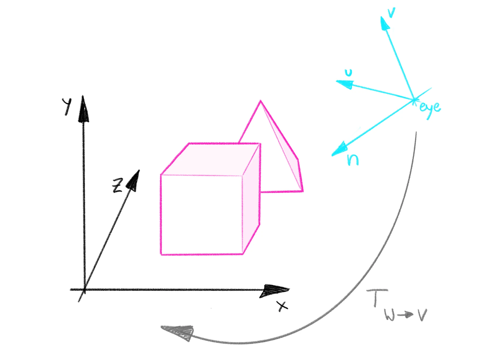
Den Parameter für die Translation haben wir mit −eye gegeben. Damit wird der Punkt eye in den Koordinatenursprung verschoben.
Für die Rotation können wir ausnutzen, dass es sich um eine orthogonale Transformation handelt: Wir transformieren eine Orthonormalbasis (Aufwärtsvektor up, Kamerablickrichtung look−to und das Kreuzprodukt der beiden up×look−to) in eine andere (y-, z- und x-Achse). Damit gilt für diese Transformation R und ihre Inverse R−1=RT, die Inverse entspricht also der transponierten Matrix. Finden wir also eine Transformationsmatrix, die die x-, y- und z-Achse in ihre äquivalenten Achsen des Kamerakoordinatensystems rotiert, können wir daraus einfach deren Inverses rekonstruieren – dies entspricht dann genau der Matrix, die wir suchen.
Wie erhalten wir also eine solche Matrix? Versuche, sie dir herzuleiten. Bekannt ist, dass sie die y-Basis (0,1,0) auf up abbilden soll, die z-Basis (0,0,1) auf look−to und die x-Basis (1,0,0) auf up×look−to.
Die erste Spalte der Matrix gibt an, worauf (1,0,0,0) abgebildet wird, die zweite worauf (0,1,0,0) abgebildet wird etc. Wir können unsere gegebenen Beziehungen also einfach einsetzen und erhalten unsere gesuchte Matrix.
Seien n=look-to, v=up und u=n×v. Damit erhalten wir für R−1: R−1=⎝⎛uxuyuz0vxvyvz0nxnynz00001⎠⎞=RT
Transponieren wir diese Matrix, erhalten wir also unsere gewünschte Rotationsmatrix:
Achtung! Es kann in der Praxis vorkommen, dass der up-Vektor und die look-to-Richtung noch nicht senkrecht zueinander stehen. Das muss jedoch vor dieser Rechnung erst sichergestellt werden. In dem Fall können n, v und u z.B. durch mehrmaliges Bilden des Kreuzprodukts ermittelt werden: Dabei sind dann n=look-to, u=up×n und v=n×u.
Projection Transform
TV→C | Kamerakoordinaten → Clip-Koordinaten
Mit diesem Transformationsschritt wollen wir Perspektivische Projektion unter Beachtung von Blickwinkeln sowie near und far clipping plane realisieren. Dafür müssen wir uns zunächst überlegen, wie sich perspektivische Verzerrung auf das Bild auswirkt und wie wir den Effekt mathematisch beschreiben können. Unsere Intuition sagt uns bereits, dass nähere Objekte größer erscheinen als weit entfernte Objekte.
Mit dem Strahlensatz können wir beschreiben, wie groß genau ein Objekt auf einer Projektionsebene erscheint.
Einschub – Projektionsebene
Was heißt denn nun, dass wir eine Projektionsebene verwenden? Normalerweise projiziert eine Kamera doch nichts?
Schauen wir uns die vereinfachte Funktionsweise einer Lochkamera (graue Box) an:
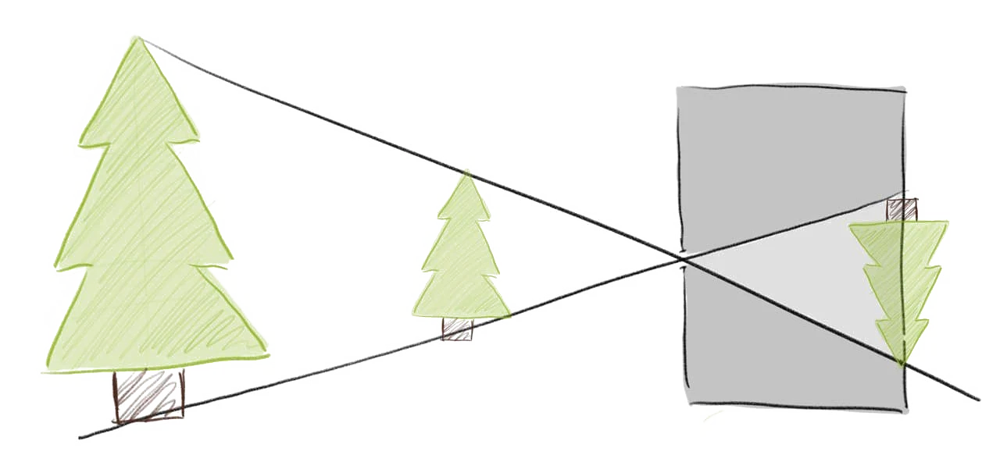
Dabei entsteht das umgedrehte Bild auf der Rückwand der Lochkamera, nachdem das Licht durch das Loch „gebündelt” wird.
Die Rückwand der Kamera ist die Projektionsebene, auf der das Bild entsteht.
Wir wollen derzeit jedoch nicht physikalisch Lichtstrahlen erfassen, sondern nur berechnen, wie groß die Gegenstände in Relation zueinander sind.
Wir können die Projektionsebene beliebig – auch vor der Kamera – platzieren und mit dem Strahlensatz bestimmen, wie groß Objekte auf der Ebene erscheinen.
Für unsere Anwendung ist die Projektionsebene eine Referenzebene, um zu steuern, wie andere Objekte skaliert werden.
Wir betrachten zunächst nur die obere Hälfte des Sichtvolumens, das wird uns später Rechnungen vereinfachen.
Angenommen, wir kennen also den Abstand der Projektionsebene von der Kamera. Wie ermitteln wir, wie groß ein Objekt mit Abstand zo auf der Projektionsebene erscheint? Gegeben sind dabei die Objektgröße o, der Abstand des Objekts z und der Abstand der Projektionsebene zp.
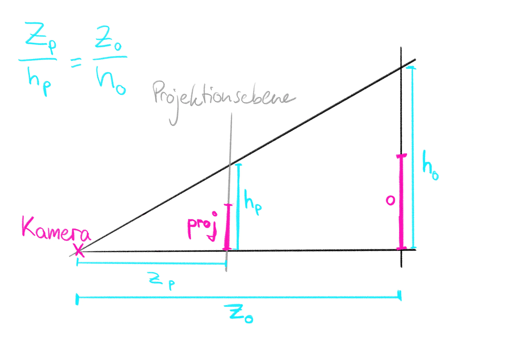
Wir wissen, dass die Objektgröße o im Verhältnis zu ho genauso groß ist wie die projizierte Größe proj im Verhältnis zu hp. Demnach gilt proj=zoo⋅zp.
Relevant für uns ist weniger die absolute Größe der Projektion als die Größe der Projektion in Relation zur Projektionsfläche, deren Größe wir mit hp bezeichnet haben. Wie zuvor festgestellt, entspricht das Verhältnis von o zu ho dem Verhältnis von proj zu hp, dem gesuchten Verhältnis: hoo=hpproj
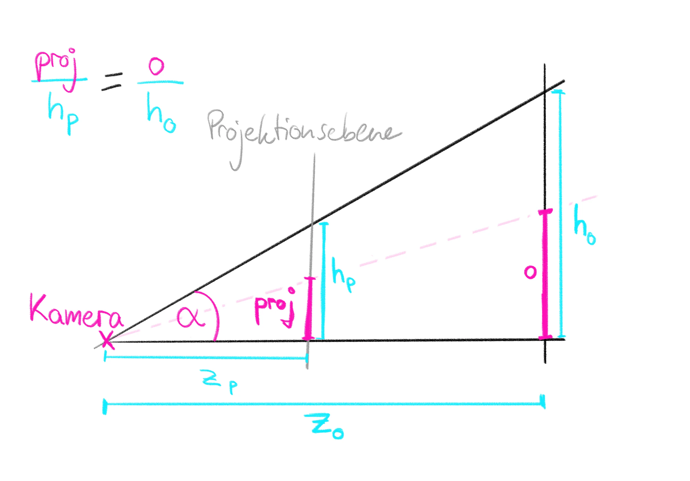
Könnten wir also ho mit bekannten Größen beschreiben, hätten wir das gesuchte Verhältnis gefunden. Dabei können wir uns zunutze machen, dass über die Kameraparameter der Winkel α ebenfalls bekannt ist. Dieser entspricht der Hälfte des Sichtwinkels θy in y-Richtung. Damit können wir Beziehungen am rechtwinkligen Dreieck nutzen und erhaltentanα=tan(θy/2)=zoho und damit hoo=tan(θy/2)⋅zoo.
Wir haben damit also eine Formel, um die Größe eines Objektes in Relation zum Gesamtbild zu beschreiben. Die Skalierung ist dabei abhängig von dem Winkel der beiden Strahlen und von der Entfernung des Objektes. In x-Richtung, also für ein von oben betrachtetes Frustum, funktioniert die Herleitung analog mit θx statt θy.
Wie können wir daraus nun eine geometrische Transformation ableiten? Da wir die Objektgröße, die ja durch x- und y-Koordinate bestimmt ist, durch einen Wert teilen, liegt es nahe, eine Skalierung in x- und y-Richtung durchzuführen. Mit tan(θx/2) bzw. tan(θy/2) ist das ohne weiteres möglich, da diese Terme nicht von den skalierten Koordinaten abhängen. Ein erster Schritt unserer Transformation ist also die
I Winkeländerung des Sichtvolumens (xy-Skalierung)
Durch Eintragen der zuvor berechneten Terme in die Transformationsmatrix erhalten wir PI=⎝⎛tan(θx/2)10000tan(θy/2)10000100001⎠⎞=⎝⎛cot(θx/2)0000cot(θy/2)0000100001⎠⎞.
Diese Transformation bewirkt, dass der Sichtwinkel auf 90° transformiert wird. Die Tiefe wird dabei nicht verändert.
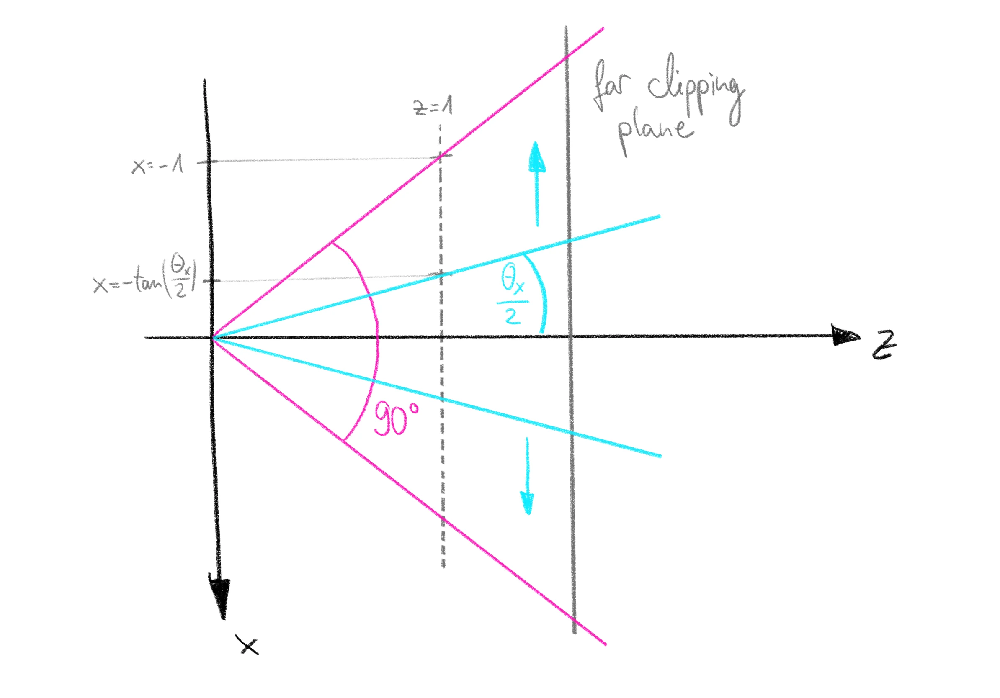
II Skalierung des Sichtvolumens
Bevor wir uns mit der Umsetzung der tatsächlichen perspektivischen Verzerrung beschäftigen, müssen wir noch einen weiteren Aspekt berücksichtigen. Denn wie bereits zuvor erwähnt, sollen die Objekte der Szene nicht nur relativ zueinander korrekt skaliert sein, nach der Transformation sollen auch alle Koordinaten im Bereich [−1,+1] liegen. Wir wollen also die gesamte Szene so skalieren, dass die far plane bei 1 liegt.
Die Proportionen sollen dabei erhalten bleiben. Das realisieren wir durch folgende Matrix:PII=⎝⎛far10000far10000far100001⎠⎞
III Perspektivische Transformation
Mit dieser Vorbereitung können wir endlich die tatsächliche perspektivische Verzerrung umsetzen. Dafür müssen wir – wenn wir eine Transformationsmatrix verwenden wollen – homogene Koordinaten verwenden.
Wenn du dich sicher mit der Mathematik fühlst, kannst du versuchen, selbst herzuleiten, warum wir perspektivische Verzerrung nicht ohne homogene Koordinaten realisieren können. Ansonsten scrolle einfach weiter.
Die Begründung, warum wir homogene Koordinaten benötigen, lässt sich gut anschaulich darstellen. Ohne homogene Koordinaten können wir nur lineare Abbildungen vom R3 zum R3-Raum realisieren.
Diese müssen für alle λ∈R,a∈R3 die Eigenschaft f(λa)=λf(a) erfüllen. Sehen wir uns den folgenden Vektor an, der zu einer Kante des Frustums verläuft.
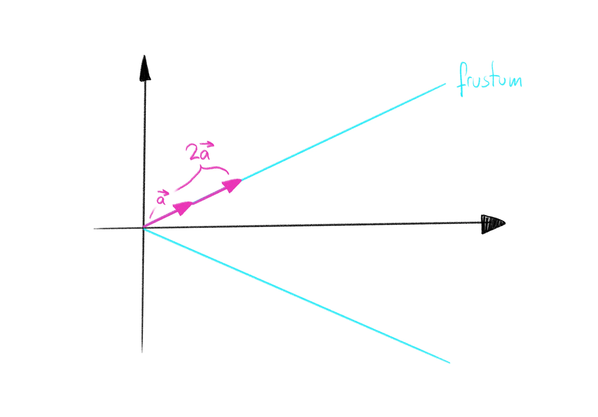
Durch die Anwendung der perspektivischen Projektion wird das pyramidenförmige Frustum zu einem Quader verzerrt. Das Ergebnis sieht folgendermaßen aus:
Offensichtlich gilt dabei f(2a)=2f(a), damit ist die perspektivische Verzerrung keine lineare Abbildung für den R3.
Doch im Gegensatz zur Translation wird die perspektivische Verzerrung nicht auf einmal linear, wenn wir sie mit den homogenen Koordinaten in den R4 erweitern. Das lässt sich am besten damit anschaulich erklären, dass mit Matrixmultiplikation nur Multiplikation mit den Koordinaten und Addition der Ergebnisse erlaubt, Dividieren durch eine Koordinate ist also nicht möglich. Wie können wir diese Transformation dann mittels homogener Koordinaten umsetzen?
Homogene Koordinaten für Perspektivische Verzerrung
Für die Projektion homogener Koordinaten zurück in den R3-Raum werden alle Koordinaten durch w geteilt und die w-Koordinate anschließend vernachlässigt. D. h., hier wird bereits eine Division durchgeführt, die wir womöglich nutzen könnten um eine tiefenbasierte Verzerrung der Geometrie zu erreichen...
Zur Erinnerung:
H−1:⎝⎛xyzw⎠⎞↦⎝⎛x/wy/wz/w⎠⎞
Statt über eine Transformationsmatrix direkt die gewünschte Verzerrung zu erreichen, wollen wir die Koordinaten so transformieren, dass sie nach der Umwandlung in den R3-Raum korrekt verzerrt sind. Dabei werden x- und y-Koordinate durch die Division korrekt in den NDC-Raum transformiert. Wir müssen uns zudem aber noch ansehen, wie die z-Koordinate transformiert werden soll.
Bisher liegt weiterhin z=0 bei der Kameraposition, z=k bei der Near-Plane und z=1 bei der Far-Plane. Nach unserer Transformation soll jedoch z=0 bei der Near-Plane und z=1 bei der Far-Plane liegen.
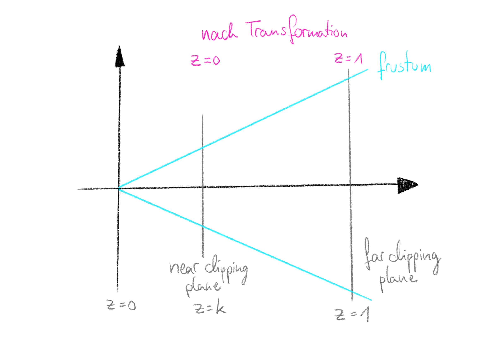
Dies wird erreicht durch eine Verschiebung der z-Werte, sodass die Near-Plane im Ursprung liegt:
z′=z−k
Freilich, skalieren wir die z-Koordinate so, dass Near- und Far-Plane exakt eine Einheit voneinander entfernt sind. Die Division der z-Koordinate durch die bisherige Differenz von Near- und Far-Plane-Position liefert:
z′′=(z−k)/(1−k)
Diese Transformation kann durch folgende Matrix dargestellt werden:
PIII=⎝⎛10000100001−k11001−k−k0⎠⎞
Dadurch ergibt sich bei der Transformation der Koordinaten ⎝⎛10000100001−k11001−k−k0⎠⎞⎝⎛xyz1⎠⎞=⎝⎛xy1−kz−kz⎠⎞.
Transformationsmatrix der gesamten Projektion
Durch Komposition der Teiltransformation ergibt sich folgende Transformation für die Projektion:
Achtung Bei der Umwandlung in nicht-homogene Koordinaten wird auch die z-Koordinate durch w, also durch z geteilt. Dadurch sind die z-Werte in ihrem Wertebereich nicht linear verteilt. Genaueres dazu wird in der Vorlesung zum z-Buffer behandelt.
Welkoordinaten → Clip-Koordinaten Zusammengefasst werden die folgenden Transformationen angewandt, um vom Weltkoordinatensystem ins Clip-Koordinatensystem umzuwandeln:
Translation der Kameraposition in den Ursprung.
Rotation, sodass der up-Vektor die y-Achse und die Blickrichtung die z-Achse beschreiben.
Skalierung des Blickwinkels.
Uniforme Skalierung, um die Far-Clipping-Plane nach z=1 zu verschieben.
Verschiebung des z-Wertebereichs und Kopieren von z in die homogene Koordinate.
Perspective Division Transform
Um vom Clip-Koordinatensystem in NDC zu transformieren, muss lediglich in nicht-homogene Koordinaten umgewandelt werden, also durch w geteilt werden.